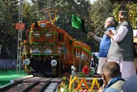
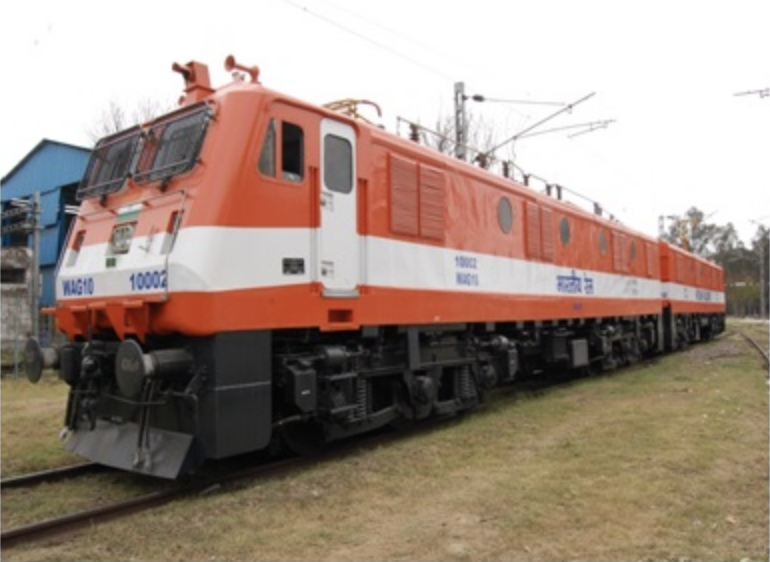
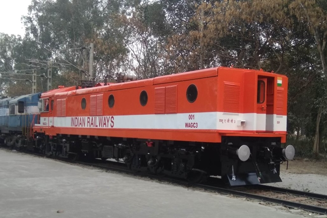
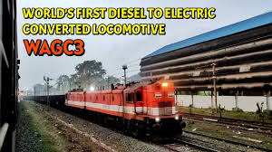
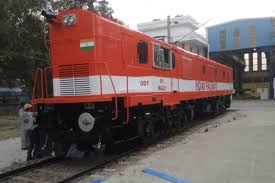
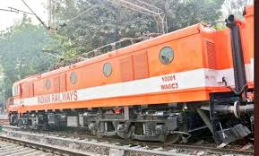

WAGC-3/WAG 10 LOCOMOTIVES
Indian Railways creates history! Converts diesel loco to ‘Make in India’ electric locomotive

Indian Railways creates history! Indian Railways production unit, Diesel Locomotive Works (DLW), has for the first time converted a locomotive from diesel to electric traction. A WAGC3-class diesel locomotive has been converted to electric and the new indigenous 'Make in India' engine delivers 5,000 HP.

Indian Railways creates history! Indian Railways production unit, Diesel Locomotive Works (DLW), has for the first time converted a locomotive from diesel to electric traction. A WAGC3-class diesel locomotive has been converted to electric and the new indigenous ‘Make in India’ engine delivers 5,000 HP, which is a 92% increase from the on rail track 2,600 HP of the older version of the locomotive. This 5,000 HP unit is one half of a 10,000 HP locomotive, says Indian Railways. According to the national transporter, two diesel locomotives are being converted to one “permanently coupled 12-axle, electric locomotive” of 10,000 HP. “The older diesel locomotive had 3,200 HP, but on track it was 2,600 HP. In case of electric there is no loss of HP and two engines are required, so two 5,000 HP locos are being coupled to yield an 10,000 HP,” a senior railway official told.

Led by the first woman GM of DLW, Rashmi Goyel, the project is a definite step forward towards reducing carbon emissions and introducing new age technology in Indian Railways. A team of engineers from DLW, BHEL, RDSO and CLW worked on the project which was completed under the guidance of Member Traction of Railway Board, Ghansyam Singh. The work on the ambitious and historic project began on December 22, 2017 and the new locomotive was dispatched on February 28, 2018. From concept to execution the conversion of the diesel locomotive to electric was carried out in just 69 days! The new electric locomotive is a prototype which will now be tested for further improvements.

Indian Railways and its officials chose a locomotive that was due for a mid-life rehabilitation. It was decided that the traction motors, bogies and chassis of the older diesel engine would be retained. A roof and sidewalls of a decommissioned WAM4-class electric locomotive were used. DLW made the drawings for modification of the locomotive, while RDSO prepared the equipment layout. BHEL worked on the power drive of the locomotive along with RDSO. A WAG7 class electrics was chosen to work with the existing traction motors, says Indian Railways. One challenge that railway engineers faced was the fact that of electric control since electric locomotives have dual cabins, while traditionally diesel engines have single cabins. That meant that the control wiring for around 9 kilometres had to be adapted accordingly.

This 5,000 HP unit is one half of a 10,000 HP locomotive, says Indian Railways
Indian Railways has already started work on modifying the chassis of another locomotive unit. According to Indian Railways, a twin CoCo, WAGC3 would equal power of almost four WDG3A. This, hopes Indian Railways, will enhance the average speeds of freight trains.

Meanwhile, Indian Railways is also testing its new 12,000 HP electric locomotive that has been manufactured by Alstom at a factory in Bihar’s Madhepura. This locomotive is part of ‘Make in India’ order placed by Indian Railways for 800 electric locomotives. Two new diesel electric locomotives have also recently been delivered to Indian Railways by GE as part of an over $2 billion ‘Make in India’ project that involves both import and manufacture of 1,000 locomotives.